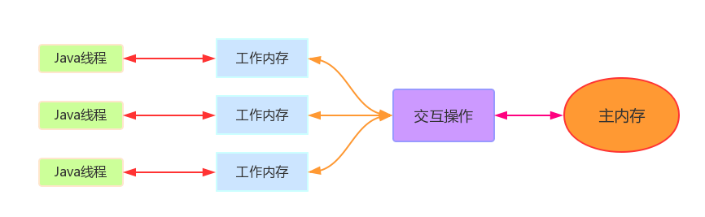
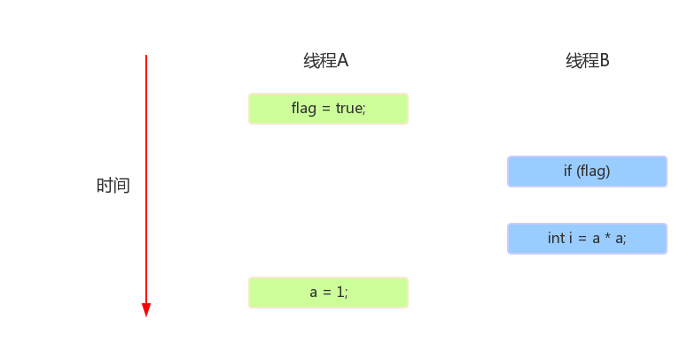

HELLO,
MY NAME IS XuJianGuo AND THIS IS MY BLOG
从JVM层面理解volatile
Java主存与工作内存
在分析volatile之前有必要讲下Java中线程是怎么与主存进行交互的，首先看下图：
图上的工作内存和主内存都是Java里面自定义的模型，与系统无关。
主内存。Java内存模型规定了所有的变量都存储在主内存中，如果要简单理解的话，可以勉强认为是Java堆，但事实上并不能。
工作内存。这个工作内存是跟线程相关联的，就是说每个线程都是专属于自己的工作内存，工作内存中保存了该线程使用到的变量的主内存的副本拷贝，线程对变量的所有操作都必须在工作内存中进行，不能直接读取主内存中的变量。
交互操作。工作内存和主内存之间都有一些原子操作来实现变量的存取，从工作内存到主内存的，从主内存到工作内存的，从而实现了两者之间的交互。下面列出8种操作：
- lock（锁定）：作用于主内存的变量，它把一个变量标识为一条线程独占的状态。
- unlock（解锁）：作用于主内存的变量，它把一个锁定状态的变量释放出来。
- read（读取）：作用于主内存的变量，将一个变量的值从主内存加载到工作内存中，为load动作使用。
- load（载入）：作用于工作内存的变量，将用read读取的变量值加载到工作内存的变量副本中。
- use（使用）：作用于工作内存的变量，将工作内存中的一个变量值传递给执行引擎。
- assign（赋值）：作用于工作内存的变量，将执行引擎中的值赋值给工作内存的副本。
- store（存储）：作用于工作内存的变量，将工作内存中的变量的值送到主内存中。
- write（写入）：作用于主内存的变量，它把store中的值写入主内存中。
volatile特性一：可见性
可见性强调的是一个线程修改了这个变量的值，新值对于其他线程来说是可以立即得知的。
在JVM中，它是通过对交互操作规定两条规则来实现可见性的：
规则一：use指令前面是load指令，load后面是use指令。强调的是use和load成对出现的规则，从文字上表达就是你要用变量的时候就必须从主存中加载变量。也就是A线程做出的改变，B线程在加载变量的时候会在主内存中获取到最新的值。
规则二：store指令前面是assign指令，assign指令后面是store。强调的是assign和store指令成对出现的规则，从文字上表示就是你对变量做的改变后必须立刻更新到主内存中，保证其他线程能够读取到最新的值。
volatile特性二：禁止指令重排序
什么是指令重排序？就是JVM将Java代码编译成指令去运行的时候，会将这些指令重新排序执行，在单个线程中，指令的重排序是不会有影响，但是在多线程的环境下，可能就会出现影响，下面我们举个例子说明一下：
class Example {
int a = 0;
boolean flag = false;
public void write() {
a = 1; //操作1
flag = true; //操作2
}
public void read() {
if (flag) { //操作3
int i = a * a; //操作4
}
}
}
现在我们假设线程A和B同时执行这个类的两个方法，线程A执行write方法，线程B执行read方法，在指令重排序后，可能会出现下面的情况：
如何没有发生指令重排序的话，按照这样的时间片执行的话，i等待1，但是在重排序后，i变成了0，所在在重排序下，volitile变量不禁止这种行为，就会在多线程的环境中意料之外的结果。
volatile真的安全？
我们来看看一个很简单的例子：
class Test {
private volatile int a;
public void add() {
a++;
}
}
我们用javap反编译文件，看看生成的字节码指令：
class Test
minor version: 0
major version: 52
flags: ACC_SUPER
Constant pool:
#1 = Methodref #4.#14 // java/lang/Object."":()V
#2 = Fieldref #3.#15 // Test.a:I
#3 = Class #16 // Test
#4 = Class #17 // java/lang/Object
#5 = Utf8 a
#6 = Utf8 I
#7 = Utf8
#8 = Utf8 ()V
#9 = Utf8 Code
#10 = Utf8 LineNumberTable
#11 = Utf8 add
#12 = Utf8 SourceFile
#13 = Utf8 Test.java
#14 = NameAndType #7:#8 // "":()V
#15 = NameAndType #5:#6 // a:I
#16 = Utf8 Test
#17 = Utf8 java/lang/Object
{
Test();
descriptor: ()V
flags:
Code:
stack=1, locals=1, args_size=1
0: aload_0
1: invokespecial #1 // Method java/lang/Object."":()V
4: return
LineNumberTable:
line 1: 0
public void add();
descriptor: ()V
flags: ACC_PUBLIC
Code:
stack=3, locals=1, args_size=1
0: aload_0
1: dup
2: getfield #2 // Field a:I
5: iconst_1
6: iadd
7: putfield #2 // Field a:I
10: return
LineNumberTable:
line 5: 0
line 6: 10
}
SourceFile: "Test.java"
我们会发现其实对volatile类型的变量a的自增还是会切换成几个指令来运行，一旦换成几个指令来执行并且没有使用lock指令的话，还是会出现线程安全的问题，所以volatile不是原子性的。如果我们要一个变量保证原子性的话，我们就可以使用java.util.concurrent.atomic包下的原子性，我们拿AtomicInteger类来看看它是怎么实现原子性的。
我们翻看一下AtomicInteger的源码，可以发现：
//抽取部分做说明
public class AtomicInteger extends Number implements java.io.Serializable {
private static final Unsafe unsafe = Unsafe.getUnsafe();
private volatile int value;
public final int incrementAndGet() {
return unsafe.getAndAddInt(this, valueOffset, 1) + 1;
}
}
AtomicInteger内部还是使用volatile的变量，但是在自增方法incrementAndGet中调用的是Unsafe对象的方法，Unsafe是一个提供了CAS指令操作的类，通过CAS去保证原子性。
CAS是怎么保证原子性的呢？CAS需要三个操作数，一个是变量的内存地址，一个是变量的旧的预期值，最后一个是新的值，JVM首先会看内存地址的值跟旧的预期值一不一样，一样的话就用新的值替换，不一样就不更新，JVM将上面的处理过程实现为一个原子操作。这样就保证了AtomInteger的原子性了。